Implementing a Resource Grammar: Stage 1, A Naive Foods Grammar
Our goal is to implement the Foods Grammar in 3 stages.
Just get the Foods Grammar to print something that is not grammatical. We just want all types and implementations (i.e. All cats and funs) inside the resource grammar. We need lincats for all the cats, and we need lins for funs. To reach that goal, we can implement any number of internal opers we need.
Get the Foods Grammar to print grammatical sentences. i.e. Implement just enough grammar for Foods Grammar to be correct.
Add more linguistic distinctions that extends the Foods Grammar.
This page explains the steps needed to implement the first stage.
We will assume we are implementing mkCl in this example. This is useful because you will need to implement this function in the Foods grammar, “This pizza is very italian”. Notice the similarity between that sentence and the example sentence given below, “She is very old”.
In our case we have to implement PredVP, UseComp, and CompAP. You should start from the innermost function, in our case, CompAP, and work your way outwards.
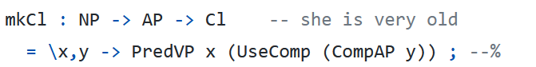We need to implement AP for CompAP, and to implement AP, we need the category A and the function PositA that takes an A and outputs an AP. AP stands for Adjectival Phrase, and A stands for Adjective. PositA stands for “Positive Adjective”, so this is something like “good”. CompAP stands for “Comparative Adjective”, something like “better”.
The following image shows what we need to implement and the types of the functions. We need to implement the cats A, AP, Comp, and VP and the funs big_A, PositA, CompAP, and UseComp.
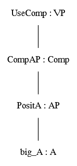The following screenshot is not an output of anything from Grammatical Framework, it was created for pedagogical purposes.
Working our way upwards, big_A implements the word “big” in your language, PositA takes an A and outputs an AP, CompAP takes AP and outputs a Comp, and UseComp takes Comp and outputs a VP.
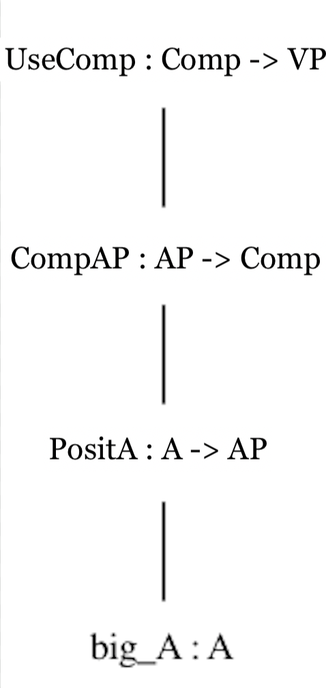STAGE 1: GET THE GRAMMAR TO PRINT UNGRAMMATICAL SENTENCES
First Steps: Implementing A and AP naively
For the categories A and AP, determine if there are lincats in CatLang.gf., where you replace Lang with whatever language you are workin on, e.g. CatTam.gf for Tamil. Based on convention, these lincats will point to ResLang.gf, like how AP below points to ResTam.
For the category A, we have:
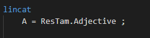And for the category AP, we have:
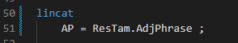Go to ResLang.gf and search for the oper found after the dot. In this case, we need to search for the oper “AdjPhrase” and “Adjective”. We then implement the Adjective oper, following the screenshot below. Ignore “AND” and “OR”; those are for pedagogical purposes only.
First we implement Adjective naively. We assume there is no inflection table, and that there is just a single string in it. We can either write this out as {s: Str} as per the first example, or use the module Prelude’s built in “SS” oper.
We then implement AdjPhrase and just assume it is the same as the Adjective.
We also need an internal mkAdj oper, meaning an oper that is not exported for external users of the resource grammar, that will implement the Adjective. Current convention, following Inari’s convention, is that we use a shortened “mkAdj” instead of “mkAdjective”.
In this case, we have implemented mkAdj such that its type is that it takes a string and returns an Adjective. The type ‘Adjective’ is implemented as record with a string. This shortened implementation is the equivalent of the 2 lines below that.
Remember that this is a naive implementation that does not use an inflection table. This only assumes a single string.
Note that mkAdj is an internal oper, meaning it’s an internal oper that is not exported. The ParadigmsLang.gf is for the API and is used in application grammars.
Cat.gf is abstract grammar and is common for the whole RGL.
ResLang.gf is a resource module (not resource grammar) and is internal for a given language.
CatLang.gf is concrete grammar and is specific for a given language.
To test that we have implemented everything correctly, we need to implement some words! Go to LexiconLang.gf and implement some words. For an example in Tamil:
Test that the word linearises. You can use the following commands in terminal. The first command opens the gf shell (remember to replace the second “Lang” with your language, e.g. “LangTam.gf”, and the second tests the linearisation.
$ gf LangLang.gf
> l big_A
Or, if you don’t want to just run one command, you can type the following in terminal.
$ echo "l big_A" | gf --run LangLang.gf
A successful output looks similar to the following screenshot:
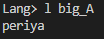Where “periya” is the word for “big” in Tamil.
Another Example: Implementing PositA naively
Now that we have implemented A and AP, we need to implement “PositA”, according to the right-most function of the abstract syntax tree below.
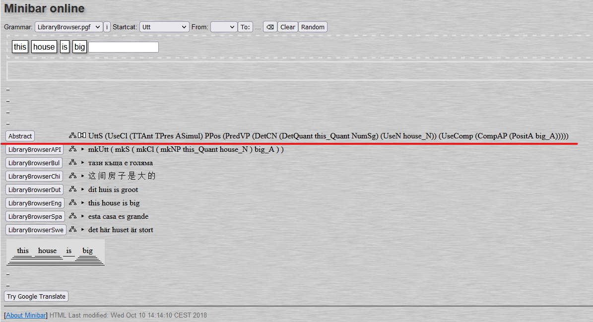PositA is not a category, it is a function that takes A and outputs a Positive Adjective. We first change our working folder in terminal from gf-rgl to gf-rgl/src/Lang, in this case, gf-rgl/src/tamil. Then we grep for PositA in all gf files in src/tamil.
$ grep PositA *.gf
We see that PositA is used in several files:
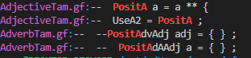It seems the file where PositA “lives” is in AdjectiveLang.gf. We go to AdjectiveLang.gf and implement PositA naively, taking the adjective string and outputting the adjective itself. There is UseA2, but we don’t need that function implemented at this stage.
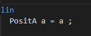We can test that we have implemented PositA directly through the following commands, similar to step 5 of stage 1.
$ gf LangLang.gf
> l PositA big_A
or, again, if you want it in one command:
$ echo "l PositA big_A" | gf --run LangLang.gf
A successful output looks similar to the following screenshot:
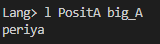Where “periya” is the word for “big” in Tamil.
Concatenation of two sub-trees: Implementing naive PredVP
Consider the following screenshot of the syntax tree of the sentence “this house is big”. We implemented the right sub-tree following the instructions above. After you implement the other categories and functions, we will need to implement PredVP, which has the type Cl, or “Clause”.
These steps are non-trivial because PredVP takes two sub-trees and concatenates them into one tree.
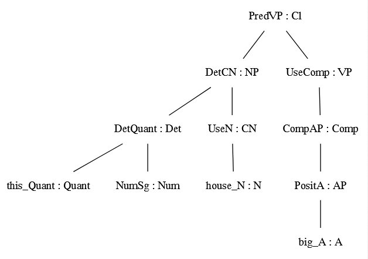We first implement the Clause category in CatLang.gf following the instructions above. Then we implement PredVP.
PredVP takes a Noun Phrase (NP) and a Verb Phrase (VP) and concatenates them together. Recall that at this stage, NP and VP are strings (either {s = str} or SS).
In ResLang.gf we can implement this in two ways, either with a lambda function, or in two lines. For more information, see the the GF tutorial on operation definitions.
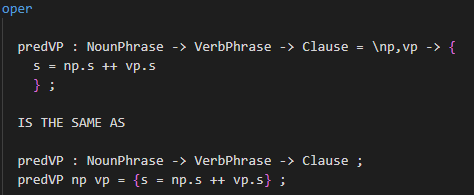In SentenceLang.gf, you will need to find/implement PredVP = ResTam.predVP.
Note that the second line in the screenshot is an inline definition of PredVP, meaning that you only implement it if you do not want to define predVP in ResLang.gf as in the screenshot above, though see the short note at the end of this section.
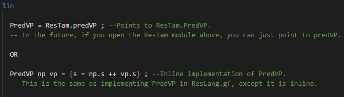You can test that the sentence works through the following command, again in gf-rgl/src/lang.
$ gf LangLang.gf
> gr PredVP ? (UseComp (CompAP (PositA big_A))) | l
A successful output looks like this:
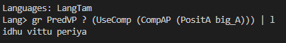Which means “this house is big” in Tamil.
or, in one command,
$ echo "gr PredVP ? (UseComp (CompAP (PositA big_A))) | l -treebank" | gf --run LangTam.gf
A successful output looks like the following:
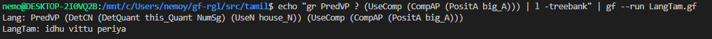Which shows the syntax tree and the linearisation below.
A Short Note on Defining Opers in ResLang.gf
Defining opers in ResLang.gf has the advantage of the oper being generalised so that it can be used in the other .gf files in your language (e.g. in NounLang.gf and VerbLang.gf).
For example, PredVP puts together a subject and a predicate, and right now we’re using it to implement statements. But in the future you might want to implement other phrases, like question phrases such as QuestVP, for sentences like “who walks”. If you implement PredVP inline, meaning in SentenceLang.gf, you won’t be able to use PredVP to define QuestVP.